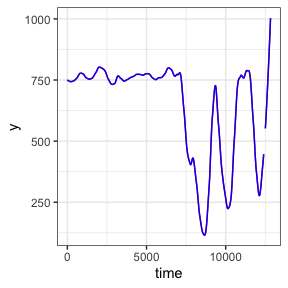
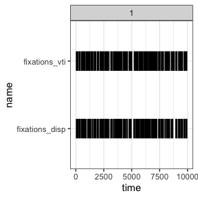
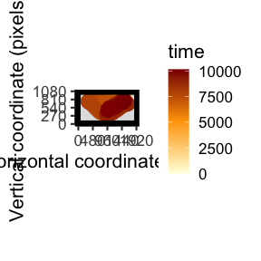
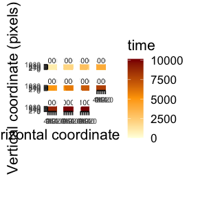
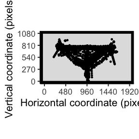
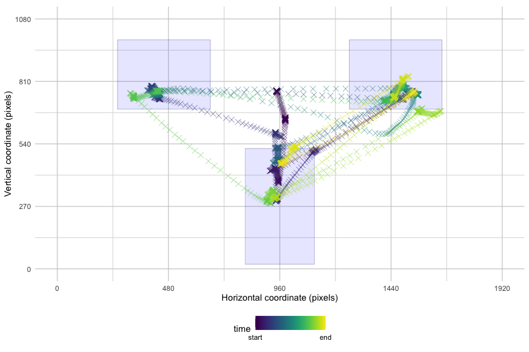
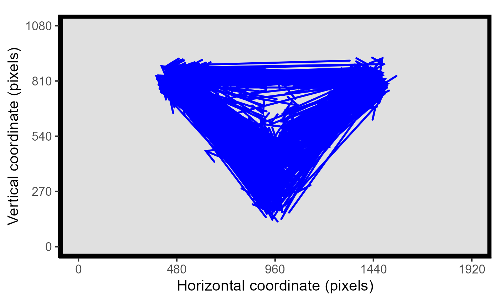

An introduction to eyetools
Matthew Ivory, Tom Beesley
eyetools.RmdThe eyetools package can help to standardise and speed up the eye data analysis, particularly in the exploratory and data manipulation stages. The suite of functions available can be used to go from relatively unprocessed data to analysis-ready. For the purpose of this tutorial, we will start with a dataset that contains eye data from three participants in a task CAN WE ADD DETAIL ON THE TASK AND WHAT IT WAS ABOUT?
You can install eyetools using the following code:
if (!require(devtools)) {
install.packages("devtools")
library(devtools)
}
install_github("tombeesley/eyetools")A quick note before starting: the following tutorial is written using only the dependencies contained within eyetools, so that means that if you are planning on following this tutorial through, you only need to install eyetools.
To begin with, let us load in the data and have an initial exploration of this basic format data. As we can see, the dataset is over 462,000 rows and 7 observations
Data Manipulation and Preprocessing
#this load will be hidden away and a nicer version of presenting this data will be written in
load("data/data_for_eyetools.RData") # imports as 'data' - eye tracking data
load("data/data_for_eyetools 1.rdata") # imports as 'td' - behavioural data # actually loads both, these need resaving...
dim(data)## [1] 462577 7To get a basic idea of the contents of the data, we can look at the
select data from the first timepoint in six trials for participant
number 118. We can see that our seven variables contain the participant
identifier (pNum), the timepoint of the trial
(time), the left eye x and y coordinates
(left_x and left_y), the right eye coordinates
(right_x and right_y), as well as a trial
identifier (trial).
head(
data[(data$pNum == 118 & data$time == 0),]
)## # A tibble: 6 × 7
## pNum time left_x left_y right_x right_y trial
## <chr> <dbl> <dbl> <dbl> <dbl> <dbl> <dbl>
## 1 118 0 909. 826. 1003. 808. 1
## 2 118 0 920. 777. 995. 763. 2
## 3 118 0 NA NA NA NA 3
## 4 118 0 910. 811. 993. 812. 4
## 5 118 0 NA NA NA NA 5
## 6 118 0 931. 805. 1010. 802. 6A good first step is to combine the left and right eye x and y
coordinates to get a single pair of [x,y] coordinates for each
timepoint. The eyetools function combine_eyes() can do this
for us. The method parameter gives the option to either “average” the
two eyes, or we can use the “best_eye”. For “average”, the result is
based on the average of the two eyes for each sample, or for samples
where there is data from only a single eye, that eye is used. For
“best_eye”, a summary of the proportion of missing samples is computed,
and the eye with the fewest missing samples is used.
Here we use the default parameter “average”. Important to note is
that all the eyetool functions operate on data from a single
participant, and so in order to process data from multiple participants,
it is good practice to combine these functions using
lapply. As the functions require data to be a single
participant, we will keep the data in list format until the end.
data <- lapply(split(data, data$pNum), function(dataIn) {
dataIn_combined <- combine_eyes(dataIn, method = "average")
#cbind(pNum = dataIn$pNum, dataIn_combined) # return the combined data with the participant identifier too
})The above code returns a list of three elements, and if we take a look at just one participant, we are returned with a dataframe that has x and y variables in place of the left_* and right_* variables. This is the data format expected by many of the other eyetools functions: time, x, y, and trial.
head(data[[2]]) # participant 118## time x y trial
## 1 0 955.8583 816.5646 1
## 2 3 956.5178 820.6221 1
## 3 7 960.7383 819.7616 1
## 4 10 956.9727 815.3331 1
## 5 13 958.6214 814.0815 1
## 6 17 956.0035 814.1564 1The next stage of the process would be to remove missing data within
continuous streams of eye data which are likely to be caused by
blinking. We can do this using the interpolate() function.
The maxgap parameter specifies the maximum number of consecutive NAs to
fill. Any longer gaps will be left unchanged. This is set as default to
25. The method parameter can either be “approx” (default) or “spline”
which are both calls to zoo::na.approx and
zoo::na.spline respectively.
data <- lapply(data, function(dataIn) {
interpolate(dataIn, maxgap = 25, method = "approx")
})Depending on the experimental design, the predictive and
non-predictive cues used for each trial may be counterbalanced, so
sometimes the predictive cue will show on the left hand side, or
sometimes on the right hand side. For the sake of consistency, it can be
beneficial to normalise the predictive cues to a single side. This can
help in observing patterns in the fixations. We can normalise this data
using the function conditional_transform(). This function
currently allows for a single-dimensional flip across either the
horizontal or vertical midline. It can be used on raw data or fixation
data, provided that variables x,y, and one to specify the counterbalance
are present.
The keen-eyed will notice that the present data does not contain a
variable to specify the counterbalanced positions. This is contained in
a separate dataset that holds the behavioural data, including the
response times, the outcome, accuracy, and cue_order which
tells us whether the predictive cue was on the left (coded as 1) or on
the right (coded as 2).
head(td)## # A tibble: 6 × 8
## pNum trial P_cue NP_cue cue_order correct_out accuracy RT
## <chr> <int> <dbl> <dbl> <dbl> <dbl> <dbl> <dbl>
## 1 117 1 2 6 1 2 1 6114.
## 2 117 2 1 5 2 1 1 3869.
## 3 117 3 2 5 1 2 1 4657.
## 4 117 4 1 6 2 1 1 3367.
## 5 117 5 2 6 2 2 0 5057.
## 6 117 6 1 5 1 1 0 7798.First we need to combine the two datasets based upon the participant
identifier. We then need to reorder the columns into the
time, x, y, trial format required for future eyetools
functions.
data <- lapply(split(td, td$pNum), function(dataIn) {
pNum <- unique(dataIn$pNum)
dataIn <- merge(data[[pNum]], dataIn) #combine the datasets
dataIn[,c(2:4, 1, 5:ncol(dataIn))] #reorder the columns
})Once the data has been joined we can use
conditional_transform() to transform the x coordinates
across the midline.
data <- lapply(data, function(dataIn) {
conditional_transform(dataIn,
flip = "x", #flip across x midline
cond_column = "cue_order", #this column holds the counterbalance information
cond_values = "2",#which values in cond_column to flip
message = FALSE) #suppress message that would otherwise repeat - just says "Flipping across x midline"
})An additional step that can be beneficial is to make the eye data
smoother(). This function helps to smooth the gaze data,
removing particularly jerky movements. For now, let’s store the smoothed
data in a new object.
data_smooth <- lapply(data, function(dataIn) {
smoother(dataIn,
span = 0.1) # default setting. This controls the degree of smoothing
})The below plot shows the difference between the raw and smoothed data.
raw <- # participant 118, trial 5
smooth <- data_smooth[[2]][data_smooth[[2]]$trial == 5,] # participant 118, trial 5
ggplot() +
geom_line(data = raw,
aes(x = time, y = y),
colour = "red") +
geom_line(data = smooth,
aes(x = time, y = y),
colour = "blue") +
theme_bw()
Fixation Detection
In this next stage, we can start to explore the functions available
for determining fixations within the data. The two main functions here
are fixation_dispersion() and fixation_VTI().
Alongside these, is the option to compare_algorithms()
which produces a small number of metrics and plots to help visualise the
two fixation algorithms. We will first demonstrate and explain the two
algorithms before demonstrating compare_algorithms() as
this relies on the two fixation algorithms.
Dispersion Algorithm
fixation_dispersion() detects fixations by assessing the
dispersion of the eye position using a method similar to that proposed
by Salvucci and Goldberg (1996)1. Evaluates the maximum dispersion
(distance) between x/y coordinates across a window of data. Looks for
sufficient periods in which this maximum dispersion is below the
specified dispersion tolerance. NAs are considered breaks in the data
and are not permitted within a valid fixation period. By default, it
runs the interpolation algorithm and this can be switched off using the
relevant parameter.
fixations_disp <- lapply(data_smooth, function(dataIn) {
fixation_dispersion(dataIn,
min_dur = 150, # Minimum duration (in milliseconds) of period over which fixations are assessed
disp_tol = 100, # Maximum tolerance (in pixels) for the dispersion of values allowed over fixation period
run_interp = FALSE, # the default is true, but we have already run interpolate()
NA_tol = 0.25, # the proportion of NAs tolerated within any window of samples that is evaluated as a fixation
progress = FALSE) # whether to display a progress bar or not, when running multiple participants
# this is best set to false as it presents a bar for each participant
})The resultant data output from fixation_dispersion()
presents data by trial and fixation. It gives the start and end time for
these fixations along with their duration and the x,y coordinates for
the entry of the fixation.
head(fixations_disp[[2]]) # show sample of output data for participant 118## trial fix_n start end duration x y prop_NA min_dur disp_tol
## 1 1 1 213 363 150 933 595 0 150 100
## 2 1 2 367 623 256 977 531 0 150 100
## 3 1 3 870 1136 266 1312 782 0 150 100
## 4 1 4 1726 2013 287 967 215 0 150 100
## 5 1 5 2373 2570 197 410 796 0 150 100
## 6 1 6 3140 3293 153 1002 176 0 150 100VTI Algorithm
The fixation_VTI() function operates differently to
fixation_dispersion(). It determines fixations by assessing
the velocity of eye-movements, using a method that is similar to that
proposed by Salvucci & Goldberg (1996). Applies the algorithm used
in VTI_saccade() and removes the identified saccades before
assessing whether separated fixations are outside of the dispersion
tolerance. If they are outside of this tolerance, the fixation is
treated as a new fixation regardless of the length of saccade separating
them. Compared to fixation_dispersion(),
fixation_VTI() is more conservative in determining a
fixation as smaller saccades are discounted and the resulting data is
treated as a continued fixation (assuming it is within the pixel
tolerance set by disp_tol).
In simple terms, fixation_VTI() calculates the saccades
within the data and says the inverse to a saccade should be treated as a
fixation. To avoid eye gaze drift, it applies a dispersion tolerance
parameter as well to ensure that fixations can be appropriately
localised to an x,y coordinate pair. One current limitation to
fixation_VTI() that is not present in
fixation_dispersion() is the need for data to be complete
with no NAs present, as it cannot compute the inverse saccades.
The fixation_VTI() works best on unsmoothed data (with
default settings), as the smoothing process alters the velocity of the
eye movement. Lower values for the threshold parameter may allow for
fixations to be suitably detected with smooth data.
fixations_VTI <- lapply(data, function(dataIn) {
dataIn <- na.omit(dataIn)
fixation_VTI(dataIn,
threshold = 100,
min_dur = 150, # Minimum duration (in milliseconds) of period over which fixations are assessed
min_dur_sac = 20, # Minimum duration (in milliseconds) for saccades to be determined
disp_tol = 100, # Maximum tolerance (in pixels) for the dispersion of values allowed over fixation period
run_interp = FALSE, # the default is true, but we have already run interpolate()
smooth = FALSE, # already run above
progress = FALSE) # whether to display a progress bar or not, when running multiple participants
# this is best set to false as it presents a bar for each participant
})
head(fixations_VTI[[2]]) # show sample of output data for participant 118## trial fix_n start end duration x y min_dur disp_tol
## 1 1 1 0 177 177 959.3563 812.8221 150 100
## 2 1 2 200 430 230 961.6743 583.7324 150 100
## 3 1 3 447 747 300 959.6222 475.9596 150 100
## 4 1 4 793 1183 390 1378.0252 835.5142 150 100
## 5 1 5 1220 1716 496 980.2503 501.3017 150 100
## 6 1 6 1750 2190 440 955.1472 168.6481 150 100Saccades
This is also a sensible point to briefly highlight the underlying
saccade detection process. This can be accessed directly using
saccade_VTI(). This uses the velocity threshold algorithm
from Salvucci & Goldberg (1996) to determine saccadic eye movements.
It calculates the length of a saccade based on the velocity of the eye
being above a certain threshold.
saccades <- saccade_VTI(data[[2]])
head(saccades)## trialNumber sac_n start end duration origin_x origin_y terminal_x
## 1 1 1 747 790 43 995.1087 502.8802 1347.1290
## 2 1 2 1183 1216 33 1369.7478 797.0665 1015.8566
## 3 1 3 2193 2243 50 870.6509 235.9011 412.1774
## 4 1 4 2690 2750 60 402.1515 787.2293 947.2018
## 5 1 5 3676 3733 57 972.3343 123.4475 447.0780
## 6 1 6 4223 4279 56 402.0509 759.8224 946.9947
## terminal_y mean_velocity peak_velocity
## 1 808.0427 272.2081 396.1462
## 2 572.8536 316.8887 454.1960
## 3 815.9587 387.1401 626.0232
## 4 362.6627 302.5972 470.1270
## 5 773.0141 374.2626 677.4759
## 6 344.4058 315.0435 528.9341Comparing the algorithms
As mentioned above, a supplementary function exists to compare the
two fixation algorithms, the imaginatively named
compare_algorithms(). To demonstrate this, we apply it
against a reduced dataset of five unsmoothed trials from one
participant. It takes a combination of the parameters from both the
fixation algorithms, and by default always prints a summary table that
is also stored in the returned list. It is recommended to store this in
an object as the output can be quite long.
data_subset <- data[[2]][data[[2]]$trial %in% c(1),]
data_subset <- data_subset[,1:4] #keep only time, x, y, and trial
comparison <- compare_algorithms(data_subset,
plot_fixations = TRUE,
print_summary = TRUE,
sample_rate = NULL,
threshold = 100,
min_dur = 150,
min_dur_sac = 20,
disp_tol = 100,
NA_tol = 0.25,
run_interp = TRUE,
smooth = FALSE)
## algorithm trial percent fix_n corr.r corr.p corr.t
## 1 vti 1 91.08690 25 0.5718116 0 44.28582
## 2 dispersion 1 91.35925 38 0.5718116 0 44.28582And for the smoothed data as a comparison
data_subset_smooth <- data_smooth[[2]][data_smooth[[2]]$trial %in% c(1),]
data_subset_smooth <- data_subset_smooth[,1:4] #keep only time, x, y, and trial
comparison_smooth <- compare_algorithms(data_subset_smooth,
plot_fixations = TRUE,
print_summary = TRUE,
sample_rate = NULL,
threshold = 100,
min_dur = 150,
min_dur_sac = 20,
disp_tol = 100,
NA_tol = 0.25,
run_interp = TRUE,
smooth = FALSE)
## algorithm trial percent fix_n corr.r corr.p corr.t
## 1 vti 1 97.44986 4 0.06776173 1.631872e-05 4.315322
## 2 dispersion 1 55.75638 29 0.06776173 1.631872e-05 4.315322Areas of Interest
Finally, once we have preprocessed the data and collected our
fixation data (we will proceed using the fixations_disp
dataset), we can start looking at Areas of Interest (AOIs) and then
plots of the fixations.
For the AOI_ “family” of functions, we need to specify
where our AOIs were presented on the screen. This will enable us to
determine when a participant enters or exits these areas.
# set areas of interest
AOI_areas <- data.frame(matrix(nrow = 3, ncol = 4))
colnames(AOI_areas) <- c("x", "y", "width_radius", "height")
AOI_areas[1,] <- c(410, 840, 400, 300) # Left cue
AOI_areas[2,] <- c(1510, 840, 400, 300) # Right cue
AOI_areas[3,] <- c(960, 270, 300, 500) # outcomes
AOI_areas## x y width_radius height
## 1 410 840 400 300
## 2 1510 840 400 300
## 3 960 270 300 500The AOI_seq() function analyses the sequence of entries
into defined AOI regions across trials. Works with fixation data or raw
data as the input.
data_AOI_sequence <- AOI_seq(fixations_disp[[2]], # just participant 118, otherwise incorporate into lapply() as above
AOI_areas,
AOI_names = NULL,
sample_rate = NULL,
long = TRUE)
data_AOI_sequence[data_AOI_sequence$trial == 3,] # a one trial sample output## trial AOI entry_n
## 21 3 3 1
## 22 3 2 2
## 23 3 3 3
## 24 3 1 4
## 25 3 3 5AOI_time() analyses the total time on defined AOI
regions across trials. Works with fixation and raw data as the input
(must use one or the other, not both). This gives a cumulative total
time spent for each trial.
data_AOI_time <- AOI_time(fix_data = fixations_disp[[2]], # just participant 118, otherwise incorporate into lapply() as above
AOIs = AOI_areas)
head(data_AOI_time)## trial AOI_1 AOI_2 AOI_3
## 1 1 866 2638 2939
## 2 2 723 854 2614
## 3 3 343 356 2251
## 4 4 2345 1430 1255
## 5 5 537 0 1708
## 6 6 563 426 2022Plotting Functions
Finally, eyetools contains two plot_ functions,
plot_seq() and plot_spatial().
plot_seq() is a tool for visualising the timecourse of
raw data over a single trial. If data from multiple trials are present,
then a single trial will be sampled at random. Alternatively, the
trial_number can be specified. Data can be plotted across the whole
trial, or can be split into bins to present distinct plots for each time
window.
The most simple use is to just pass it raw data:
plot_seq(data[[2]], trial_number = 57)
But the parameters of plot_seq() can help exploration be
more informative. We can in background images or the AOIs
plot_seq(data[[2]], trial_number = 57, bg_image = "data/HCL_sample_image.jpg") # add background image
plot_seq(data[[2]], trial_number = 57, AOIs = AOI_areas) # add AOIsYou also have the option to split the time into bins to reduce the amount of data plotted
plot_seq(data[[2]], trial_number = 57, AOIs = AOI_areas, bin_time = 1000)
The other plotting function is plot_spatial(), which is
a tool for visualising raw eye-data, processed fixations, and saccades.
Fixations can be labeled in the order they were made. You can also
overlay areas of interest (AOIs) and customise the resolution.
plot_spatial(raw_data = data[[2]])
#plot the spatial data for trial 57 only.
plot_spatial(fix_data = fixations_VTI[[2]][fixations_VTI[[2]]$trial %in% c(57),]) # a LOT of fixations, let's take a sample
plot_spatial(sac_data = saccades)